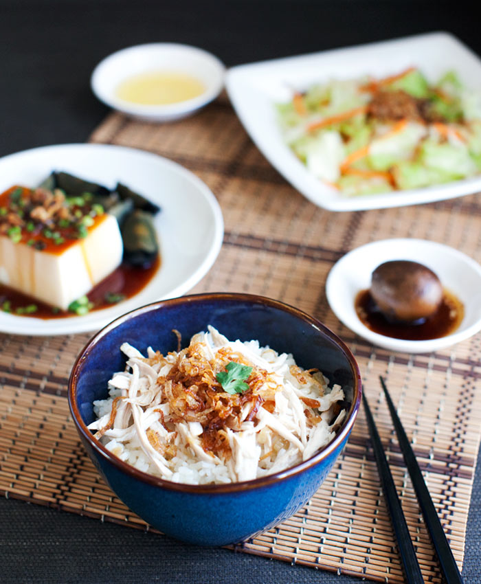

Taiwanese Chicken Rice

Equipment
- Deep Skillet or Shallow pot
- A sharp knife and cutting board
- A wok or skillet
- A Spatula or flipper
- Tongs
- Ladle or large spoon
- (Optional) Meat Thermometer
Ingredients
- 2 bone-in chicken breasts with skin
- 1 tablespoon + 1 teaspoon of salt
- 1/4 teaspoon white pepper
- 2-3 large shallots, diced
- 1-2 scallions, diced
- 4 cups water
- 1 tablespoon lard or other animal fat
- 2-3 cloves of garlic, large cuts
- 3-4 servings of cooked short grain rice
Directions
- Take the skin off of each of the chicken breasts. lightly salt each side of the skin and put it aside.
- Prepare a shallow pan of water (like a deep skillet). Put a tablespoon (or more) of salt in the water.
place the chicken breasts and half the galic cloves in the salt water and turn on heat until small bubbles start to form around the chicken breasts, leave it at that heat. DO NOT BOIL
- As the Chicken is cooking (about 10 minutes) use the fat in a hot wok or pan to fry the chicken skins until crispy. Remove the chicken skins to let them cool.
- In the remaining fat add the shallots and scallions and fry until golden brown. Turn off the heat and add remaining garlic and stir vigorously.
- Check to see if the chicken is fully cooked using the meat thermometer. Turn off the heat to the water.
- Cut the crispy chicken skin into strips. Put half of them in your scallion mixture and ass the white pepper. Turn on the heat and add several ladle-fulls of the chicken soup to the scalluon mixture. Cook until it is the desired consistency, taking care not tu burn it.
- Remove the chicken breast from the soup and use two forks to shred the chicken. It should be very moist.
- Prepare a bowl of warm rice, top the rice with a generous portion of chicken and top it with a ladle of the sauce.
- Finish it by topping it with the crispy chicken skin you reserved from earlier.
- Serve is with some vegetables and a bowl of the chicken soup that you cooked the chicken breast in.
Main Page